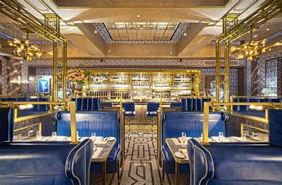

Restaurant, establishment where refreshments or meals may be procured by the public. The public dining room that ultimately came to be known as the restaurant originated in France, and the French have continued to make major contributions to the restaurant’s development.
| Menu | |
|---|---|
| Veg Menu | Non-Veg Menu |
| item-cost | |
Crispy corn-120 Gobi mnchuria-170 |
Chicken Manchurian-220 Chicken Lolipop-250 |
|
Address: 1-47,Near Durga Temple, Devichowk,Rajahmundry |